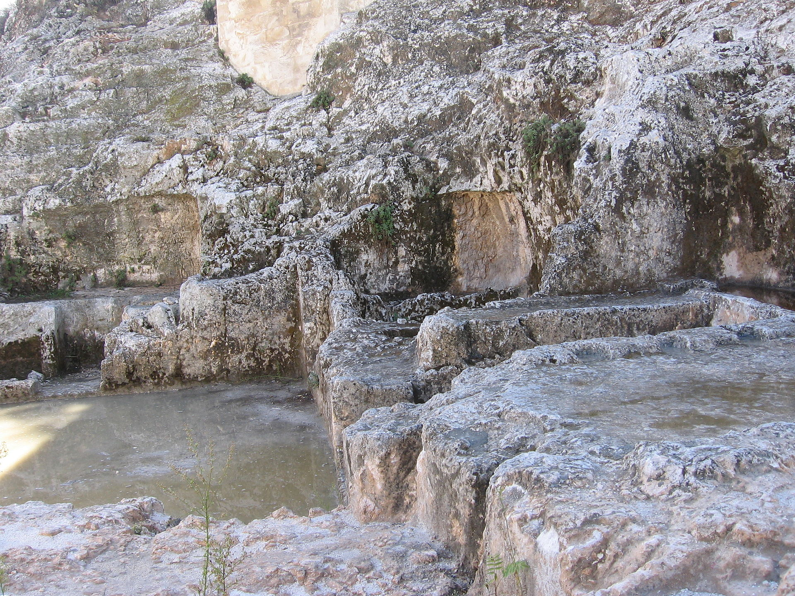
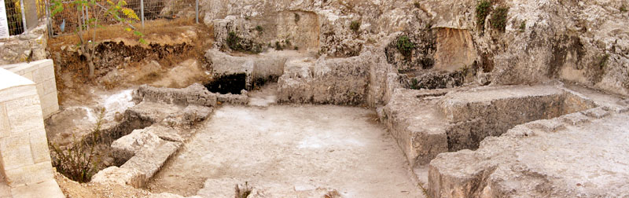
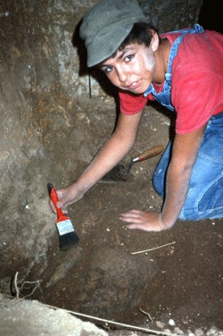
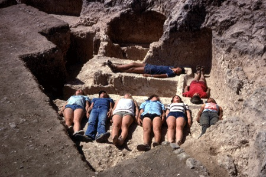
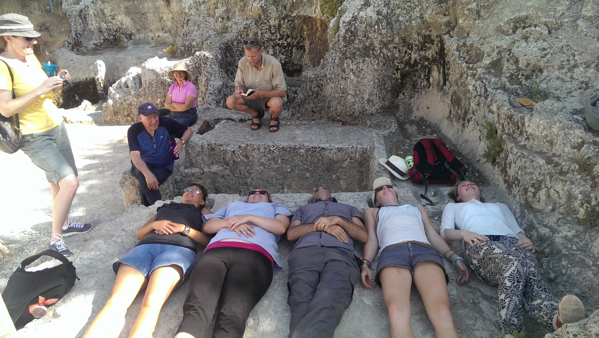
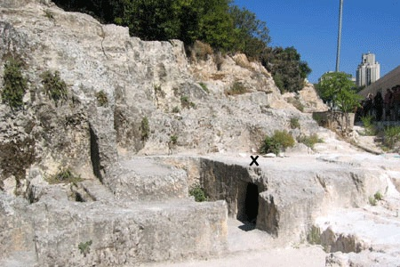
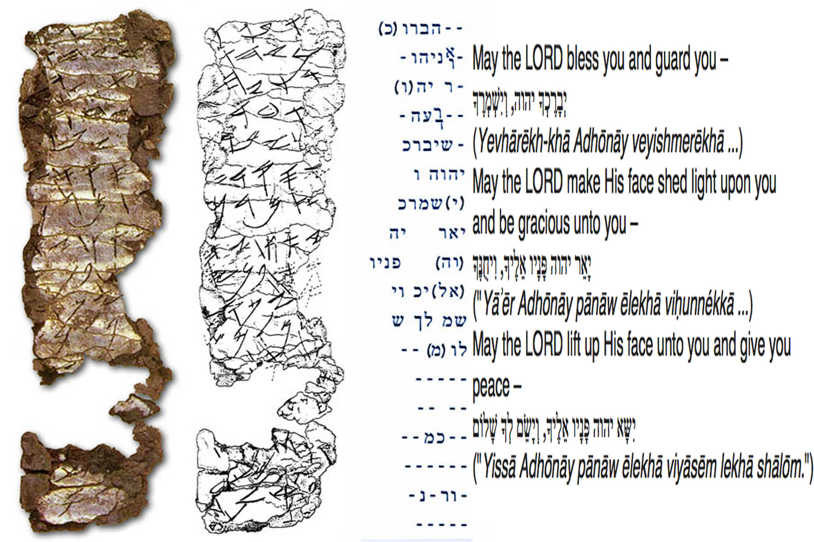

The Ketef Hinnom Silver Scrolls are an artifact that contains what may be the oldest surviving texts from the Hebrew Bible, dating from the First Temple period around the late 7th to early 6th century BCE prior to the Babylonian Exile, and are now preserved at the Israel Museum. The Ketef Hinnom Silver Scrolls were discovered at Ketef Hinnom, an archaeological site southwest of the Old City of Jerusalem, adjacent to St. Andrew's Church, now on the grounds of the Menachem Begin Heritage Center. It is located where the Valley of Rephaim and the Valley of Hinnom meet, on the old road from Jerusalem to Bethlehem.
They were discovered inside of ancient burial caves, in 1979 when Gabriel Barkay was excavating an area on the outskirts of Jerusalem in the backyard of St. Andrews church. He had a group of 12 and 13 year old kids helping him. They discovered some tombs, but they were empty—having been looted long ago. One boy, Nathan, was given the task of cleaning out the dirt from the nooks under the burial benches. Like a true boy, he started banging the nook with a hammer. It broke, revealing an entrance to a secret chamber containing more than 1000 objects. There were 125 objects of silver, 40 iron arrowheads, gold, ivory, glass, bone, 150 semi-precious stones, and skeletons. The objects dated to the late 7th and early 6th centuries BC. Among the objects were two, tiny rolled-up silver scrolls 1” long.
Here is the direct account from Gabriel Barkay. In the 1970’s I was interested in extra-mural activity, that is, activity outside the walls of the city. There would be quarrying of stones outside the city, growing fresh vegetables, military gatherings, burials, roads and military watch towers. These would have occupied a place not too far from the city, but not too close. I put myself in the shoes of the ancients and thought to myself, where would those functions have taken place? I decided that the hill [Ketef Hinnom] where St Andrews was located was the best probability. I took a survey and collected pottery and was convinced that there were finds to be made there. With a little donation in 1975, I did a modest exploration and found remnants from an ancient Christian church and a burial grave. It was enough to prove that it was a worthwhile location. In 1979 to 1980, I came back with a limited budget under the sponsorship of Tel Aviv University. The ‘volunteers’ were 12- to 13-year-olds from Tel Aviv, members of an archeology club for youth organized by the Society for the Protection of Nature in Israel. Thirteen is a dangerous age. But the S.P.N.I. provided the money – it was a low budget -- I was happy to have them nevertheless. We excavated by the outer apse of the present day church. The graves were in bad shape with collapsed roofs. The caves had all been looted. On top of the caves was a road connecting Jerusalem with Bethlehem. One cave had a series of headrests and burial benches. One bench was shaped like a cushion with six head rests. One bead was found that had been part of the burial gifts. Under the bench, we discovered a repository where they buried the bones and I looked into that repository and saw something that looked like a rock floor. I was disappointed. Among the thirteen-year-old diggers, there was one annoying kid named Nathan, who was always tugging at my shirt. I thought this was an ideal place to put him – he would be out of my sight. I told Nathan the repository had to be as clean as his mother’s kitchen, even if he had to lick it. It had to be clean for the photography. Not too long afterwards, I felt him tugging at my shirt again. Nathan had in his hand almost complete pottery vessels. This time, I pulled at his shirt, took him back to the area and asked where he found them. Bored, Nathan had banged on the floor with a hammer. Under the rocks, he found the pottery. Little Nathan was sent home with his peers. Then I recruited archeology students from Tel Aviv and Jerusalem and from the Institute for Holy Land Studies on Mount Zion. The pastor at St Andrew, who was a student of mine, brought us electricity from the church. We worked 24 hours around the clock.
In one chamber more than a thousand objects were found. They included 125 objects of silver, 40 iron arrowheads, gold, ivory, glass, bone and 150 semi-precious stones. There was 60 centimeters [two feet] of accumulation filled with objects and skeletal remains. There was a lot of dust and a lack of oxygen. It was very hot. We had to change teams every few hours. There was a lady who was in charge of coffee and sandwiches. Everyone was sworn to secrecy – they weren’t allowed to tell parents, spouses, or friends. If word got around Jerusalem that there was such a treasure, the California gold rush would be nothing compared to what would happen here.
 
Judy Hadley, a girl from Toledo Ohio, now a professor of Bible at Villanova University in Philadelphia, showed me a purplish-colored object looking like a cigarette butt. It took us three years to unroll it properly. It was 2.5 cm wide, about 1 inch. When unrolled, it was 10 cm [nearly 4 inches] in length. It was made of pure silver, 99 % silver. Very delicately scratched on the silver were ancient Hebrew characters. I saw it at the Israel Museum lab and immediately recognized the four letters of the Divine Name, YHVH. [yod he vav he]During the dig we decided that all the dirt was very important and stored it in large plastic boxes donated by Tnuva [Israel’s major dairy]. Then we sifted the dirt in lab conditions. We found a smaller silver object – all buckets were labeled, so we would know exactly where they were found. The second one is smaller – 4 cm in length [1.5 inches].

The surprise was immense when we realized that both objects have the Larger silver plaque, 7th c. B.C. Priestly Benediction from Numbers 6:24-26. Because of the pottery and the script,the objects are dated to the seventh century B.C., to the time of the prophet Jeremiah. They are the earliest Bible verses ever found. Ironically, the dig supervisor in the chamber where the repository was found in 1979, Gordon Franz, recalls Gaby’s introductory words, “Remember, Archeology is not a treasure hunt.” Today Gordon is a staff member of the Associates for Biblical Research and a Bible teacher. Gaby went on to tell me that the discovery of the silver plaques received very wide public interest. In the 1990s he was approached by some people from the University of Southern California's West Semitic Research Project. Dr. Bruce Zuckerman and his team wanted to photograph the plaques using new photographic and computer imaging techniques. With the advances in photography, they got a resolution that did not exist in the 1980s. They could zoom in on every letter, and then superimpose those letters upon broken letters to decipher those that were unclear, reconstructing broken letters in the scribe's own peculiar style.
These 7th century B.C. amulets were worn on the body -- on the forehead or arm, or around the neck -- to protect the wearer from evil or surround the wearer with the name of the Lord for protection. Just like today, when people wear religious objects on the body, hoping that the Almighty will be gracious onto them, and protect them from calamity. On your next visit to Jerusalem, don’t miss the exhibit of the silver plaques with the priestly benediction in the Archeology Wing of the Israel Museum. You can see the burial complex where the rolled-up silver amulets were found and recount the amazing story of their discovery. You can also see the cushioned headrests still visible and talk about burial customs during the First Temple period when the deceased was “gathered unto his fathers.” (See II Kings 22:20 and Judges 2:10)

Amulet I (3.8” x 1.1”) reads:[…]YHW…the grea[t…who keeps] the covenant and [g]raciousness toward those who love [Him] and those who keep [His commandments…]. The Eternal? […]. [the?] blessing more than any [sna]re and more than Evil. For redemption is in Him. For YHWH is our restorer [and] rock. May YHWH bles[s] you and keep you. [May] YHWH make [His face] shine…”. Amulet II (1.5” x .4”) reads: “[First line almost completely illegible.] May h[e]/sh[e] be blessed by Yahweh, the warrior [or “helper”] and the rebuker of [E]vil: May Yahweh bless you, keep you. May Yahweh make His face shine upon you and grant you p[ea]ce”.[1] Both amulets contained the same inscription: “May Yahweh bless you and keep you; May Yahweh cause his face to shine upon you and grant you peace.” This is a near quote of the priestly benediction in Numbers 6:24-26.